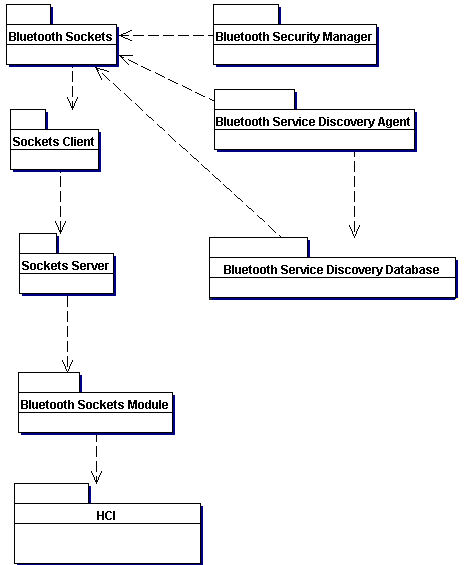

|
| |
Provides support for Bluetooth, a short-range radio communications technology, standarised by the Bluetooth SIG in the form of the v1.0 Bluetooth Specification.
|
Like many other communications technologies, Bluetooth is composed of a hierarchy of components, referred to as a stack. The stack is shown below:

The Bluetooth stack
The Bluetooth Host Controller components provide the lower-level of the stack, which are typically implemented in hardware, and to which applications (or services as providers of particulary functionality over Bluetooth are called) do not have direct acccess.
The Bluetooth Host components allow applications to send or receive data over a Bluetooth link, or to configure the link:
RFCOMM allows an application to treat a Bluetooth link in a similiar way as if it were communicating over a serial port. This is used to support legacy protocols.
The Logical Link Control And Adaptation Protocol (L2CAP) allows finer-grained control of the link. It controls how multiple users of the link are multiplexed together, handles packet segmentation and reassembly, and conveys quality of service information. It is the usual choice for applications.
The Service Discovery Protocol (SDP) is used for locating and describing services provided by or available through a Bluetooth device. Applications typically use it when they are setting up communications to another Bluetooth device.
The Host Controller Interface (HCI) driver packages the higher level components to communicate with the hardware.
The APIs described below give applications access to RFCOMM, L2CAP, SDP, and to a limited extent, HCI.
|
Functionality is provided by a number of APIs. Use them as follows:
Bluetooth Sockets encapsulates access to L2CAP and RFCOMM through a TCP/IP-like sockets interface.
Service Discovery Database encapsulates one side of SDP: a local service uses it to record its attributes, so that remote devices may discover its presence, and determine if it is appropriate to use.
Service Discovery Agent encapsulates the other side of SDP: it allows you to discover the services that are available on a remote device, and the attributes of those services.
Security Manager enables services to set appropriate security requirements that incoming connections must meet.
This provides an API by which a dialog can be called that asks users for device selection information.
|
The following figure shows how the different Bluetooth APIs relate. Note how the Bluetooth Sockets API is the fundamental API upon which the other APIs rely to perform communications with other devices.

Bluetooth API relationships
|
Copyright ©2002 Symbian Ltd. 6.1-00174 |
|